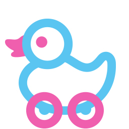

First you crawl then you drive.

Imagine your infant could get around independently and safely, regardless of their inability to move.
Time spent rushing, pushing baby carriages round and round the neighbourhood could be quality time spent with your partner, or catching up on household chores. Our mission is to eliminate parental error from future sidewalks, while allowing babys to explore their environment from inside of a secure, self-driving kinderwagen.